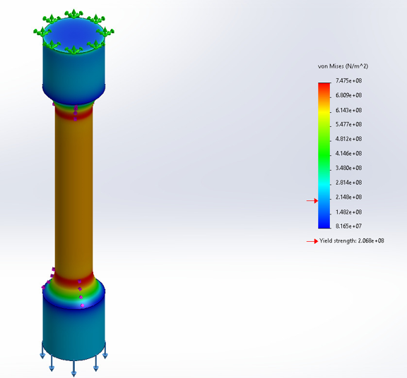
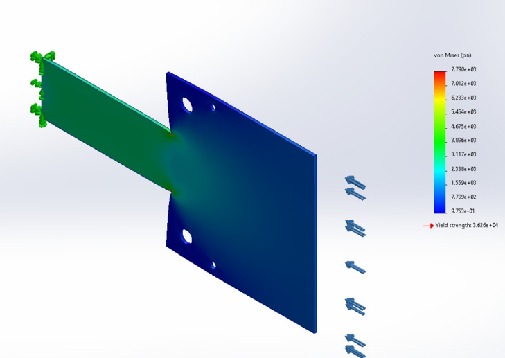
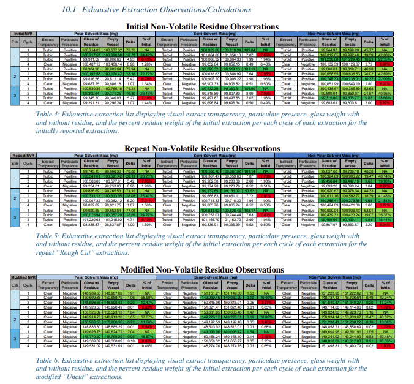
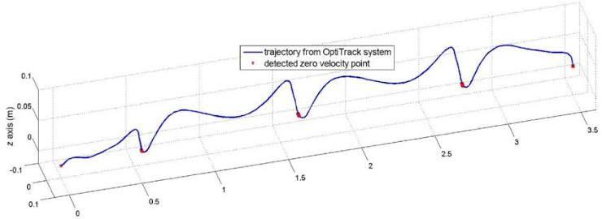
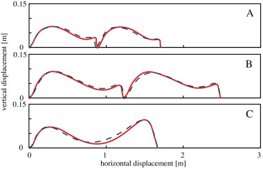

Technical Stuff
Things I have done and learnt through my journey. The nitty gritty that takes time and effort.
Controls
Some sample works from my controls courses at CMU. Over the courses I've worked with basic controllers like PID all the way to LQR, Kalman filters, path planning and trajectory optimization, on both simulations and real hardware. The video and images below are a small sample of the work I've done.


Machine Learning & AI
Some sample works from my machine learning and AI courses at CMU. Over the courses I've worked with basic models like decision trees and SVMs, all the way to deeper models like transformers and variational autoencoders (VAEs). The images below are a small sample of the work I've done.


Regulatory & Biomedical
Some sample works from my biomedical engineering degree at Rowan, and my research.
Finite Element Analysis
- Built a simple 2D FEA solver in MATLAB
- Ran virtual tensile tests and stress studies in SolidWorks Simulation
- Checked hip implant fatigue against ISO 7206
Medical Device Regulatory Bootcamp
- Ran a mock medical device company for a hip implant
- Worked toward an FDA 510(k) submission
- Wrote SOPs, CAPA forms and a design history file
- ISO 13485 audit and ISO 14971 risk management
Biomechanics & Research
- Gait, ground reaction forces and inverse dynamics
- Risk analysis and standards research for the exoskeleton




Sensors & Digital Signal Processing
Some sample works from my research: getting an IMU (a small motion sensor) to stream clean data into a Raspberry Pi, and then into a filter that tracks where the foot is. Most of the work was making sure the data going in was actually good. Roughly in the order I did it:
1. Figure out how noisy the sensor is
I recorded the sensor sitting completely still. Any movement in the readings is just noise, and those numbers get used later to set up the filter.


2. Take readings fast enough (aliasing)
If you don't take readings fast enough, fast motion can show up as fake slow motion. It's the same thing as a car wheel in a video that looks like it's spinning backwards. For walking, about 500 to 1000 readings a second is enough, and I set the sensor's built-in filter to cut out anything too fast to be captured properly.
3. Find settings that don't drop data
I tried different baud rates (how fast data travels down the cable) and sample rates. At 1000 readings a second, the faster setting made the sensor's timing go haywire, and the slower one still dropped some packets. Going down to 500 readings a second at 460800 baud, with all 9 axes on, got rid of the drops, so that's what I used for the walking trials.


A side note on clocks
The sensor and the Raspberry Pi each keep their own clock, and they slowly drift apart. Not a big problem here, but something to keep in mind with any real time system.

4. Track the foot
With clean data going in, I tracked walks on a taped course. The tracked distance was off by about 3 in on a 118 in straight walk, about 6 in on a 256 in path with turns, and the full loop ended about 9 to 10 in from where it started.


For comparison, here's what a foot path normally looks like according to other studies (images from Google, not my data). Ours has the same up and down step shape.

